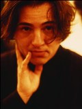

|  |
Fazıl Say, Ankara Devlet Konservatuvarı’nda piyano ve bestecilik eğitimi gördü. 17 yaşında kazandığı bursla Düsseldorf Robert Schumann Enstitüsü’nde David Levine ile çalışma olanağı elde etti. 1992-1995 yılları arasında devam ettiği Berlin Müzik Akademisi’nde eğitimini tamamladı. 1994’te Uluslararası Genç Konser Sanatçıları Yarışması’nda aldığı birincilikle uluslararası ün kazandı.